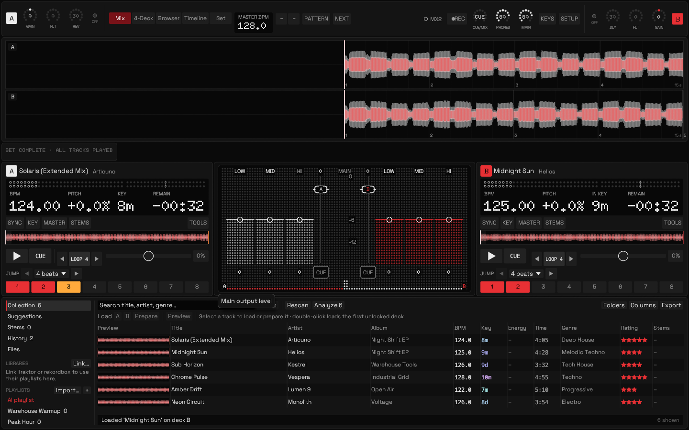
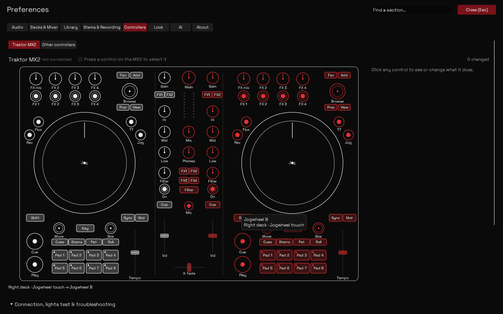
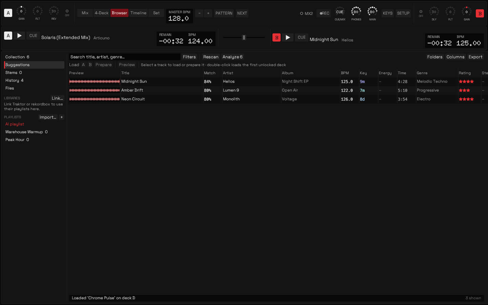
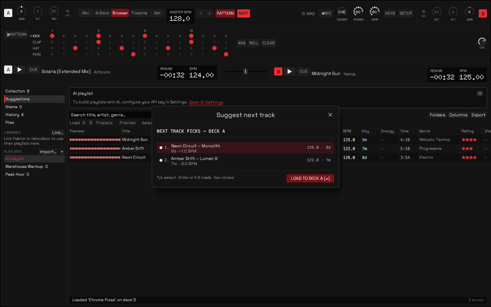
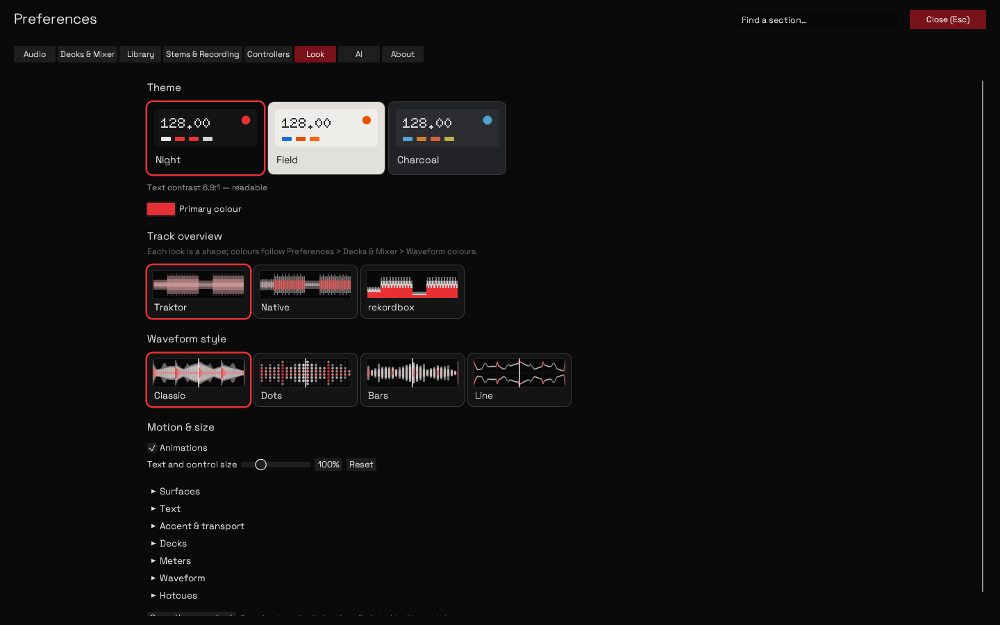

Native Linux DJ workstation. Built for the booth.
A clean-room Traktor architecture written in 100% safe Rust. Direct PipeWire and ALSA audio, plug-and-play Native Instruments USB HID hardware, 4-stem mixing, and five companion layouts without Wine or subscriptions.
$curl -fsSL https://retraktordj.vercel.app/install.sh | bash
$git clone https://github.com/adamtdm/ReTraktor.git && cd ReTraktor && ./install.sh

Five workspaces built around hardware hands
The hardware handles the tactile performance. The companion screen focuses on beat phase, dot-matrix meters, transition curves, and harmonic digging—readable at arm's length with full keyboard navigation.
4-Stem isolation, Neural Mix™ EQ swap, and lock-free DSP
Every loaded track splits into Drums, Bass, Other, and Vocals with zero latency through Linkwitz-Riley crossovers, or loads bleed-free Meta Demucs FLAC caches automatically. Try the live signal behavior below.
Hybrid Stems, FX Rack & Loudness
Instant zero-latency frequency splitting keeps every deck ready immediately, while background Meta Demucs caching upgrades tracks to bleed-free 4-stem FLACs.
- Instant DSP + Cached Demucs: Real-time Linkwitz-Riley 4-band split on every file; 1-click isolated
htdemucsinstall (nice -n 10background worker) cachesdrums,bass,other, andvocalsFLACs. - Per-Stem FX & Quick Isolators: Route Deck FX selectively per stem, hit
ACAPELLAorINSTin one click, or flip hardware EQ knobs into Neural Mix™ mode. - 40+ Deck FX & Ozone Maximizer: Two-slot assignable FX unit (Ziqualizer, Beatmasher 2, Gater, Formant Filter, Delay T3, Reverb T3) plus master limiter (
BOOST/LIMIT). - WSOLA Key Lock & EBU R128 Auto-Gain: Independent pitch lock across full tracks and stems, with automatic loudness matching on load.
Turntable Physics & PipeWire Engine
Designed around real-time thread safety on Linux without PulseAudio latency penalties or floating-point zipper noise.
- Alpha-Beta Scratch Tracking: Proven tracking filter (α = 0.125, β = 0.0039) at true 33⅓ RPM (1.8 s per 1024 ticks) eliminates packet jitter and drift.
- 4-Point Hermite Cubic & Cartridge Model: Anti-aliased interpolation during backspins and scratches, with V ∝ v velocity attenuation so halted platters stay silent.
- Direct PipeWire & rtkit Scheduling: Opens PipeWire 0.3.53+ directly with RealtimeKit priority and falls back cleanly to ALSA when no PipeWire server runs.
- Per-Card Output Routing: Assign separate adjacent stereo pairs for Main (1–2) and Headphones (3–4), or use Split Mono cue; hot-rescan supported.
Plug-and-play NI USB HID & MIDI Learn
Direct Linux hidraw and ALSA raw MIDI engine with rootless udev rules—including Traktor MX2 RGB LED control, S4 MK3 Haptic Drive™ platters, Kontrol RGB565 screens, and a Pioneer DDJ-FLX4 preset.

| Controller | USB VID:PID | Protocol & Features |
|---|---|---|
| Traktor MX2 | 17CC:2420 | First-Class 83 btns, 105 top LEDs, 12 bottom RGBs, 24-bit/96kHz 4-out/2-in |
| Traktor MX4 | 17CC:2430 | NHL2 HID driver + CSI layout |
| Traktor Kontrol S4 MK3 | 17CC:1720 | Haptic Drive™ Dual motorized platters (0x30/0x31) + 320×240 RGB565 screens |
| Traktor Kontrol S3 | 17CC:1900 | 4-deck NHL2 HID surface + mixer LEDs |
| Traktor Kontrol S2 MK3 | 17CC:1730 | 2-deck NHL2 HID surface + jogwheels |
| Traktor Kontrol S8 | 17CC:1370 | 480×272 RGB565 bulk screens + stem faders |
| Traktor Kontrol S5 | 17CC:1420 | 480×272 RGB565 screens + touch strips |
| Traktor Kontrol D2 | 17CC:1400 | Modular deck + 480×272 RGB565 waveform display |
| Traktor Kontrol X1 MK3 | 17CC:2200 | HID + generic report-diff learn mode |
| Traktor Kontrol Z1 MK2 | 17CC:2400 | Mixer HID + generic report-diff learn mode |
| Traktor Kontrol F1 | 17CC:1120 | 4×4 RGB pad matrix + stem/remix control |
| Pioneer DDJ-FLX4 & Class-Compliant MIDI | ALSA MIDI | Preset + Learn 14-bit CC, relative encoders, custom .txt & .tsi routing |
Collection migration, harmonic AI, themes, and recording
Bring your Traktor collection.nml and playlists intact without modifying existing files, export straight to rekordbox XML, or build harmonic sets with your own AI API key.
Library, Format Interop & Recording
- Native Multi-Format Decoder: Pure-Rust
symphoniaplayback for.mp3,.flac,.wav,.ogg,.m4a,.aac, and.aiffwith ID3/Vorbis/MP4/AIFF tag editing. - Background Track Analyzer: Detects BPM, beatgrid, Open Key, 1–10 energy level, musical phrases, and up to 8 auto cue points at phrase boundaries.
- Traktor & rekordbox Interop: Import
collection.nml(v19/v20) with cues/loops/beatgrids/playlists, relocate moved files automatically, parse.tsi(DIOM TLV), exportReTraktor-rekordbox.xmlor.m3u8, and import CSV/text tracklists with a missing-tracks shopping list. - Master Mix Recorder (● REC): Streams post-maximizer 16-bit stereo WAV +
.cue+ tracklist to~/Music/ReTraktor(auto-upgrades to RF64 past 4 GiB).
Suggestions, BYOK AI & Visual Customization
- Harmonic Suggestions & Next Up: Instant collection ranking against Deck A using Open Key wheel compatibility and half/double-time aware BPM scoring.
- Bring-Your-Own-Key AI Assistant: Generate sets from plain prompts (“45 minutes of warm-up house, 118–124 BPM”) using Gemini, OpenAI, Anthropic, or local Ollama. Sends metadata only—never audio—with keys stored
chmod 600. - Pattern Player: Built-in 16-step drum sequencer (Kick, Clap, Hat, Perc) synced to master clock with
4X4andROLLmodes. - Three Themes & Four Waveforms: Switch between Night, Field (light), and Charcoal; choose Classic, Dots, Bars, or Line waveforms and Traktor, Native, or rekordbox track overviews.



CLI diagnostics & 8-crate Rust architecture
Every subsystem lives in an isolated Rust crate and exposes headless inspection, batch track analysis, hardware verification, and terminal playback via retraktor-cli.
$ retraktor doctor [audio] PipeWire 0.3.53+ detected · RealtimeKit (rtkit) active [groups] user belongs to: audio, plugdev [udev] /etc/udev/rules.d/99-retraktor-ni.rules installed (VID 0x17CC) [hidraw] Traktor MX2 (17CC:2420) accessible (read/write) [firmware] NHL2 HID mode ready (Left SHIFT + Right SHIFT toggles MIDI)
System & Hardware Self-Test
Verifies PipeWire/ALSA audio subsystems, audio and plugdev group memberships, rootless udev device permissions, and connected controller state.
| Workspace Crate | Responsibility |
|---|---|
| retraktor-core | Reactive app.traktor.* PropertyBus, QML Defines 1.0 enums, and CSI 1.0 engine |
| retraktor-dsp | 24 dB/oct EQ models, 9 Mixer FX, 4-band stem summer, WSOLA key lock, Ozone Maximizer |
| retraktor-audio | Lock-free 4-deck engine, Alpha-Beta scratch tracking, Hermite interpolation, PipeWire / ALSA routing |
| retraktor-hid | NHL2 USB HID driver (11 NI devices), S4 MK3 Haptic FFB, RGB565 screens, MX2 LEDs, udev rules |
| retraktor-formats | Traktor collection.nml (v19/v20), .tsi (DIOM TLV), Stripes/Transients, .stem.m4a, rekordbox XML |
| retraktor-library | Open Key harmonic wheel, BPM/beatgrid/phrase/cue analyzer, smartlists, and deck loader |
| retraktor-cli | Diagnostic doctor, NML/TSI/CSI inspectors, batch analyzer, terminal TUI, 4-deck simulator |
| retraktor-gui | Native egui desktop workstation, 5 layouts, dot-matrix mixer, Set builder, BYOK AI, MX2 mapper |
Install on Linux
Install the signed x86_64 .deb package directly on Ubuntu, Pop!_OS, Debian, or Linux Mint, or compile from source on Fedora, Arch, and any Linux distribution.
Debian / Ubuntu / Pop!_OS / Mint (.deb)
Includes retraktor-gui, retraktor-cli, rootless udev rules (VID 0x17CC), real-time limits, desktop icon, and .nml file association.
curl -fsSL https://retraktordj.vercel.app/install.sh | bash
Build From Source (Any Distro + Optional Demucs)
Requires Rust 1.75+, PipeWire/SPA headers, libhidapi, libusb, libasound2, and libclang. Pass --with-demucs for offline neural stem separation.
git clone https://github.com/adamtdm/ReTraktor.git cd ReTraktor ./install.sh --with-demucs